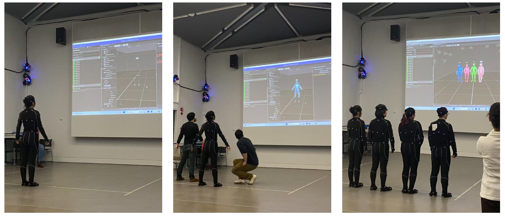

Understanding Body Diversity
Understanding body diversity through motion capture.

Abstract / Artist Statement
In contemporary society, people often pursue an idealized body shape and take it for granted that a "normal" or "standard" body has more advantages, while ignoring the value of body diversity. This project takes "height differences" as the entry point and attempts to help people re-recognize and understand the value of different body conditions through a game format, and to reflect on society's definitions of "disabled bodies" and "normal bodies".
The game scene is set in a daily supermarket shelf environment. By observing the different situations and results that three characters with different height characteristics (tall, medium, and short) encounter when completing the same task, it is hoped that people will realize that there is no absolute advantage or disadvantage in body differences. Whether it is height, body type, or disability and other body characteristics, they all come with opportunities and limitations, conveniences and risks.
Therefore, this project hopes to guide the public to view body differences more objectively, recognize that each body and life state has its own uniqueness and value, and thus understand and treat every individual with a more inclusive, equal, and non-discriminatory perspective.
Contextual Review
In contemporary society, people often regard "a sound body" as the ideal standard, and this perception is reflected in the design of our daily living environment, which mostly caters to this group. Li et al. (2021) argue that in the Chinese social context, disability is often seen as a problem that needs to be "fixed" or pitied, and this notion further influences the public's perception and interaction with disabled bodies. Although there are many barrier-free designs in daily life that show care for the disabled, these facilities often, due to their "specialness", reinforce the sense of physical difference, causing the disabled to be more exposed to sympathetic or strange looks from others while enjoying the convenience.
The inspiration for this project comes precisely from this phenomenon of "caring design", hoping to rethink the relationship between physical differences and the environment from another perspective. It aims to view disability as a normal state of human physical diversity rather than something that needs to be treated specially. It encourages users to realize that the division between "normal" and "abnormal" often stems from human definitions rather than inherent characteristics of the body itself.
In the game, tall, medium, and short individuals respectively attempt to retrieve items from the same height shelf, resulting in different outcomes. The tall person can easily reach the high items but is closer to danger and gets knocked down by a falling vase; the medium-sized person can just manage to reach the items but also suffers an accident; while the short person, unable to reach the shelf, avoids the danger due to this "limitation". This contrast reveals that there is no absolute superiority or inferiority among different physical traits, and each physical state has its own value and significance and should be regarded as a normal part of human physical diversity. The study is significant for several reasons. It challenges the social oppositional perception of "disabled bodies" and "standard bodies", revealing that any physical condition comes with both advantages and disadvantages. It prompts users to reflect on the space design logic centered on "able-bodied bodies" and how this standard invisibly excludes certain groups. At the same time, it encourages the audience to view physical differences more objectively, understand and accept the diversity of human bodies. The project also attempts to respond to the current accessibility research's reflection on the default standard of "normal bodies" (Mack et al., 2021).
Li, F.M., Chen, D.L., Fan, M. and Truong, K.N., 2021, May. “i choose assistive devices that save my face” a study on perceptions of accessibility and assistive technology use conducted in china. Proceedings of the 2021 CHI Conference on Human Factors in Computing Systems (pp. 1–14). Available at: https://dl.acm.org/doi/abs/10.1145/3411764.3445321 [Accessed 12 May 2026].
Mack, K., Morris, M.R., Cutrell, E., Ringel Morris, M. and Wobbrock, J.O. (2021) ‘Accessible by Design: An Opportunity for Virtual Reality’, arXiv preprint arXiv:2101.04271. Available at: https://arxiv.org/abs/2101.04271 (Accessed: 13 May 2026).
Impact Statement
Ethical Considerations
This project involves discussions on "disabled bodies" and "standard bodies", so during the design process, it is necessary to avoid reinforcing stereotypes of disabled bodies and strictly follow the "de-labeling" principle. Additionally, as the project is presented in a gamified manner, it is also essential to ensure the transparency of the experiments and interactive processes, clearly informing users of the issues being explored and avoiding comparisons of the advantages and disadvantages between different bodies.
Sustainability
This project is mainly presented in the form of digital games. Compared with large-scale physical installations or complex hardware systems, it requires relatively less material consumption and space resources. At the same time, the digital interactive form also enables the work to be repeatedly displayed and disseminated, reducing the resource waste caused by one-time physical production. However, digital projects also have energy consumption issues. Although this project is relatively small in scale, it is still necessary to be aware that digital technology is not completely "consumption-free".
Accessibility
This project discusses "bodily diversity", and thus accessibility is also an important component of the work. In response to the strange looks and the phenomenon of body specialization brought about by "careful design" in real life, the work guides the audience to rethink bodily differences through the contrast of results produced by different characters in the same environment, allowing the group of "standard bodies" to realize that they may also have limitations in specific situations, thereby promoting more equal understanding and recognition among different groups. The game is based on a simple keyboard interaction form, lowering the operation threshold and enabling players with different motor abilities to participate. Currently, the game is mainly expressed through visual means, which is not friendly to visually impaired users. Therefore, in the future, voice feedback, subtitle systems, and more diverse interaction methods can be further added.